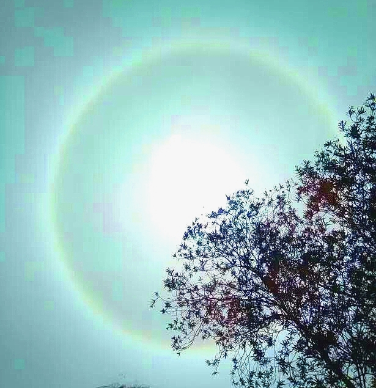
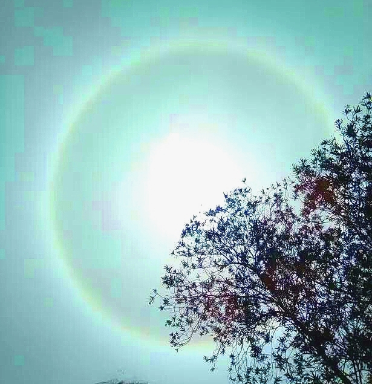

日晕奇观
2016-05-23
日晕生七彩，美瞳出云端。
莫夜雨汲汲，晨曦霁灿灿。
【赏析】2016.05.23 成都、广元等地天空惊现罕见“日晕”天象奇观。 日晕也叫圆虹，是日光通过云层中的冰晶时，经折射而形成的光现象。 10时许，一个巨大的七彩光环围绕着太阳，从淡到浓，渐显 五彩斑斓，恰似“太阳带上了美瞳”，十分艳丽壮观。民间有“日晕 三更雨，月晕午时风”的谚语。。。。到午夜后，就会有一霎夏雨来 临。至清晨，雨过天晴，一缕阳光灿烂，新的一天生机怏然。。。。。

日晕生七彩，美瞳出云端。
莫夜雨汲汲，晨曦霁灿灿。
【赏析】2016.05.23 成都、广元等地天空惊现罕见“日晕”天象奇观。 日晕也叫圆虹，是日光通过云层中的冰晶时，经折射而形成的光现象。 10时许，一个巨大的七彩光环围绕着太阳，从淡到浓，渐显 五彩斑斓，恰似“太阳带上了美瞳”，十分艳丽壮观。民间有“日晕 三更雨，月晕午时风”的谚语。。。。到午夜后，就会有一霎夏雨来 临。至清晨，雨过天晴，一缕阳光灿烂，新的一天生机怏然。。。。。
